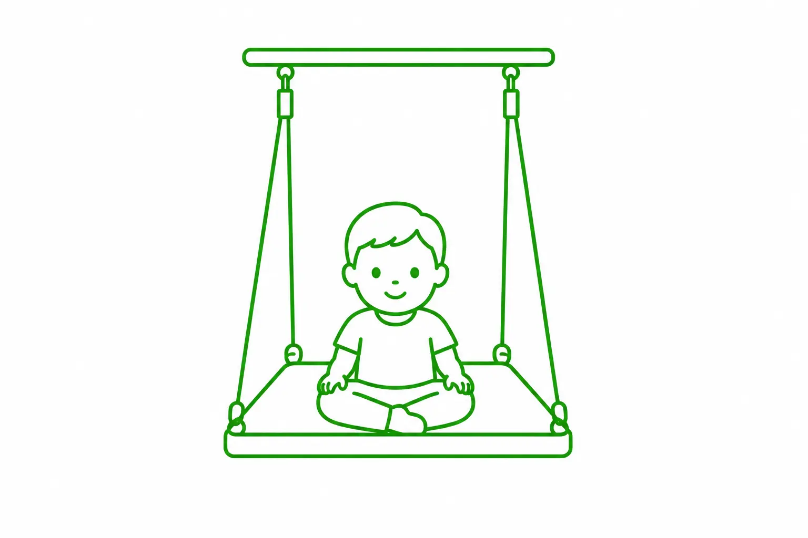

Terapia SI Gdańsk
Integracja sensoryczna to proces neurologiczny, dzięki któremu możemy odbierać, porządkować i właściwie interpretować bodźce zmysłowe – zarówno te pochodzące z otoczenia, jak i płynące z wnętrza ciała. Proces ten odgrywa istotną rolę w rozwoju motorycznym i poznawczym, ponieważ prawidłowe przetwarzanie informacji sensorycznych ma wpływ m.in. na zdolność uczenia się, koncentrację i komunikowanie się z innymi.

W przypadku zaburzeń integracji sensorycznej dziecko może mieć wiele trudności w codziennym funkcjonowaniu. Wtedy pomocna okazuje się terapia SI w Gdańsku, która pozwala odpowiednio dopasować ćwiczenia do indywidualnych potrzeb i możliwości dziecka.
Terapia SI Gdańsk – czym jest?
Terapia SI w Gdańsku opiera się na odpowiednio dobranych aktywnościach, które dostarczają dziecku różnorodnych bodźców i pozwalają ćwiczyć ich prawidłowe odbieranie oraz organizowanie. Podczas zajęć wykorzystywane są m.in. elementy ruchu, ćwiczenia równoważne, aktywności angażujące dotyk oraz zadania wymagające koordynacji wzrokowo-ruchowej. Poszczególne ćwiczenia nie są dobierane przypadkowo. Specjalista obserwuje reakcje dziecka i na bieżąco dostosowuje poziom trudności oraz rodzaj aktywności.
Ważnym elementem terapii jest stworzenie warunków, w których dziecko może aktywnie uczestniczyć w zajęciach i wykonywać zadania w bezpiecznej atmosferze. Terapia SI nie polega na wykonywaniu identycznych ćwiczeń przez wszystkich pacjentów. Każde dziecko ma inne potrzeby i inaczej reaguje na poszczególne bodźce, dlatego sposób prowadzenia zajęć powinien uwzględniać jego indywidualne możliwości.
Terapia SI Gdańsk – wskazania
Terapia SI w Gdańsku może być rozważana w przypadku dzieci, u których występują trudności związane z przetwarzaniem bodźców sensorycznych. Dotyczy to m.in. nadmiernej lub zbyt małej wrażliwości na dotyk, dźwięki, światło czy ruch, a także problemów z koncentracją, koordynacją wzrokowo-ruchową, równowagą i planowaniem ruchu. Wskazaniem do konsultacji mogą być również trudności w zakresie motoryki małej i dużej, takie jak problemy z prawidłowym trzymaniem przyborów, wycinaniem, wykonywaniem precyzyjnych ruchów czy utrzymaniem odpowiedniej pozycji podczas siedzenia przy stoliku. Terapia integracji sensorycznej może być także elementem wsparcia dzieci z opóźnionym rozwojem mowy, dyspraksją, trudnościami w nauce oraz obniżonym lub bardzo wysokim poziomem aktywności. Zaburzenia przetwarzania sensorycznego mogą towarzyszyć również niektórym zaburzeniom neurorozwojowym i schorzeniom, m.in. spektrum autyzmu, ADHD, mózgowemu porażeniu dziecięcemu czy zespołowi Downa.
Terapia SI w Gdańsku – dlaczego warto wybrać FiLO?
Wybierając terapię SI w naszym Ośrodku Terapii FiLO, można liczyć nie tylko na profesjonalną opiekę, ale również komfortowe warunki podczas każdej wizyty. Nasi terapeuci są bardzo dobrze wyszkoleni, mają doświadczenie w pracy z dziećmi i z łatwością nawiązują z nimi relacje. Potrafią stworzyć atmosferę, w której najmłodsi pacjenci czują się swobodnie, a udział w zajęciach nie wiąże się z niepotrzebnym stresem. Dysponujemy nowoczesnymi gabinetami wyposażonymi w specjalistyczne pomoce i sprzęty wykorzystywane podczas terapii integracji sensorycznej. Znajdują się wśród nich akcesoria pozwalające dostarczać dziecku odpowiednio dobranych bodźców i urozmaicać zajęcia. Zależy nam na tym, aby przestrzeń sprzyjała zarówno terapii, jak i dobremu samopoczuciu pacjentów i ich opiekunów. W naszej poczekalni dostępna jest bezpłatna kawa i herbata, a dla dzieci przygotowaliśmy specjalny kącik, w którym mogą miło spędzić czas przed wizytą. Jesteśmy otwarci na potrzeby pacjentów i ich rodziców, chętnie odpowiadamy na pytania i wyjaśniamy wszelkie kwestie związane z terapią SI w Gdańsku. Jednocześnie stale inwestujemy w rozwój naszych specjalistów, poszerzając ich wiedzę i umiejętności. Zależy nam na tym, aby być na bieżąco z aktualną wiedzą, nowoczesnymi metodami pracy oraz rozwiązaniami wykorzystywanymi we współczesnej terapii integracji sensorycznej.
Potrzebujesz pomocy?
Nie wiesz, która metoda będzie odpowiednia dla Ciebie lub Twojego dziecka? Skonsultuj się z naszym zespołem i dobierz indywidualny plan terapii.
Umów wizytęObszary Metod
Terapie w Gdańsku
Specjalista ds. Fizjoterapii
mgr Barbara Kita
Fizjoterapia PediatrycznaNajczęściej zadawane pytania
Czy przed rozpoczęciem terapii SI w Gdańsku potrzebna jest
diagnoza?
+
Tak. Terapia SI w Gdańsku w Ośrodku FiLO zawsze zaczyna się od diagnozy integracji sensorycznej. Składa się na nią szczegółowy wywiad z rodzicami, obserwacja dziecka podczas zabawy i zadań ruchowych oraz testy dobrane do wieku. Rodzice dostają pisemny opis wyników. Na jego podstawie terapeuta układa plan zajęć, dzięki czemu ćwiczenia są dopasowane do tego, z czym dziecko faktycznie ma trudność.
Od jakiego wieku prowadzona jest terapia SI w Gdańsku i ile
kosztuje diagnoza?
+
Diagnozę i terapię prowadzimy także u dzieci poniżej 4. roku życia, a wiek dziecka wpływa na przebieg diagnozy. U dzieci od 4. roku życia to pełny cykl trzech spotkań po 50 minut (640 zł). U młodszych dzieci to cykl wstępnej diagnozy złożony z dwóch spotkań po 50 minut (420 zł). Gdy rodzice chcą najpierw omówić swoje obserwacje, mogą umówić pojedynczą konsultację SI (50 minut, 220 zł). Jedne zajęcia terapii SI w Gdańsku trwają 50 minut i kosztują 180 zł.
Czym jest dieta sensoryczna i jak rodzice mogą wspierać
terapię SI w Gdańsku w domu?
+
Dieta sensoryczna to zestaw aktywności i wskazówek dobranych do konkretnego dziecka, które rodzice wprowadzają w codzienny rytm dnia. Dla jednego dziecka będą to zabawy wyciszające, dla innego aktywności, które pomagają mu się pobudzić i skupić. Terapeuta pokazuje rodzicom, co i jak często robić, i zmienia zalecenia wraz z postępami. Terapia SI w Gdańsku działa najlepiej, gdy zajęcia w gabinecie i ćwiczenia w domu się uzupełniają. Dlatego po każdym etapie omawiamy z rodzicami, co się zmieniło i na czym skupić się dalej.